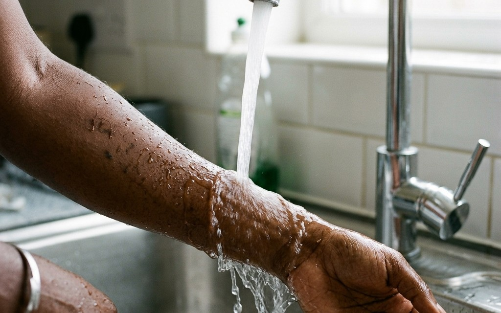

Why the first 20 minutes matter
How a burn is treated in the first minutes affects how deep it becomes, how much it hurts, and how it scars. Cooling stops the heat from continuing to damage deeper layers of skin.
What to do, step by step
- Stop the burning. Remove the person from the source. Put out flames by stop, drop and roll, or smother with a thick blanket. Switch off electricity before you touch someone.
- Cool the burn under cool running water for 20 minutes. It still helps up to about three hours after the injury. Do not use ice or iced water.
- Remove rings, watches and tight clothing near the burn before it swells. Leave anything that is stuck to the skin.
- Cover loosely with clean cling film (laid, not wrapped tightly) or a clean non-fluffy cloth.
- Keep warm. Burns can cause rapid heat loss, especially in children.
- Get help using the guide below.
What not to do
Do not apply butter, cooking oil, toothpaste, ash, raw egg, herbal pastes or ice. They trap heat, increase the risk of infection, and make it harder for doctors to see the burn. Do not burst blisters.
When to go to hospital
- Burn larger than the person’s palm, or any burn in a baby or young child
- Burns on the face, hands, feet, genitals or over a joint
- White, brown, leathery or widely blistered skin
- Electrical and chemical burns, or burns from fires in enclosed spaces
- Burns that go all the way around a limb, finger or toe
- Burns in older adults or people with diabetes or low immunity
Special situations
Chemical burns
Brush off dry powder first, then flush with large amounts of running water for at least 20 minutes and remove contaminated clothing. This applies to caustic soda, acids, hair relaxers and some skin-lightening products.
Cooking oil and hot liquids
Remove soaked clothing quickly (cut it away if needed), then cool as above. Never use water on an oil fire; smother it.
Electrical burns
Even a small mark can hide deep injury. Always go to hospital.
After the first aid
Once the wound closes, scar prevention begins: sun protection, silicone, massage and, if needed, pressure garments. Early review by a burn or plastic surgeon makes a real difference to the final result.
Read the full burn care guide or book a scar consultation.
This article is for general education and is not a substitute for medical advice. See a doctor about your own situation.